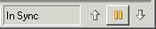
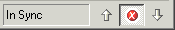

As you use the Visual Editor there are two internal models that are maintained. The first of these is a representation of the Java beans that is used by the Java Beans view, the Properties view, and the Design view. The second model is the source that represents the code that, when compiled and executed, will re-create the Java beans in a runtime VM. As you make changes to either model the Visual Editor will maintain the other model for you by performing synchronization. The status of the synchronization of the two models can be seen on the right hand side of the status bar as shown below

There is a performance overhead associated with synchronizing the two models, so the processes to do this are run in background threads on a delay timer. If changes are made to a model, by either manipulating the Java beans in a view or by editing the source, the other model needs to be updated or it will no longer be synchronized. To show that the models are not synchronized, the label changes from In Sync to Out of Sync.
After a period of inactivity, for example when you have paused typing code in the editor, synchronization will occur. While synchronization is taking place the arrows will show the direction the update is occurring. For example, the up arrow represents changes from the source to the Java beans model, and the down arrow vice versa.
If synchronization takes place too frequently and is degrading performance, the time that the synchronizer waits can be altered using the Window > Preferences > Java > Visual Editor. You can change the delay time used to make updates from the Java beans model to the source, from its initial value of 500 milliseconds. This is how long the Visual Editor waits after you have dropped or moved a Java bean in the canvas before updating the source code. The delay time that the Visual Editor waits before making updates from the source code to the Java beans model is initially set to be larger by a factor of 2. So, it will be 2 * 500 = 1000 milliseconds. If you are typing in the source code, and the synchronizer is starting too soon and you wish to increase this number, you can increase the factor to a new value. For example, 4 * 500 = 2000. With the value set as 2000, the Visual Editor will wait for 2 seconds until after you have finished modifying the source before updating the Java beans. If you wish to make a number of large changes to the source without incurring the overhead of having the synchronizer running, you can disable synchronization by pressing the pause button between the two arrows.
While the synchronizer is paused, you can make changes to the source without any overhead of parsing source, but you can no longer make changes to the Java beans model. All edits made using the Design view, the Java Beans view, or the Properties view will not be applied. When you have finished updating the source, you can resume the synchronizer by pressing the button between the two arrows. This displays a 'resume' arrow while synchronization is paused.
While the source code is being parsed and analyzed, the synchronizer may determine that the source contains errors. Rather than trying to update the Java beans model, it will wait for the errors to be corrected. If this occurs, the button will be pressed automatically and the graphic will be changed to a red X.

Once the errors have been fixed in the source and it becomes well formed enough for the parser to continue, the synchronizer will automatically refresh the Java beans model and continue.
In addition to synchronization between the Java beans model and the source code, there is also a Java VM that is used to execute the live Java bean instances. This is synchronously maintained whenever the Java beans model is changed, and is used by the Properties view and the graphical representation of components in the Design view. More information on the live Java bean instances and how to debug them can be found in the section Java beans exceptions.